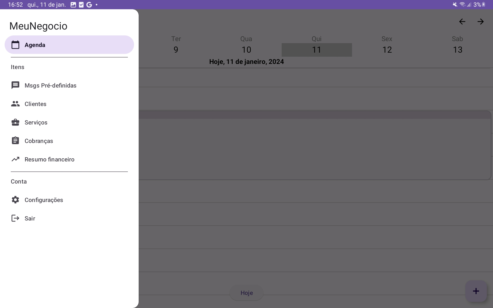
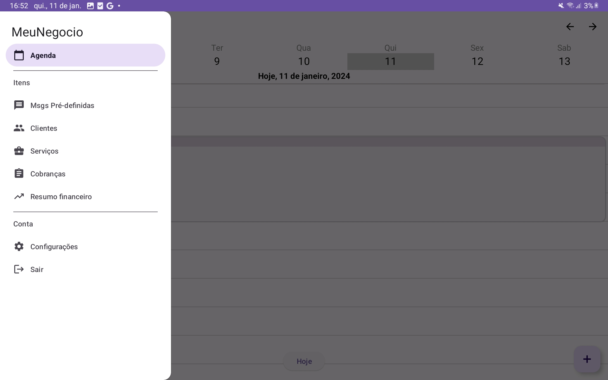
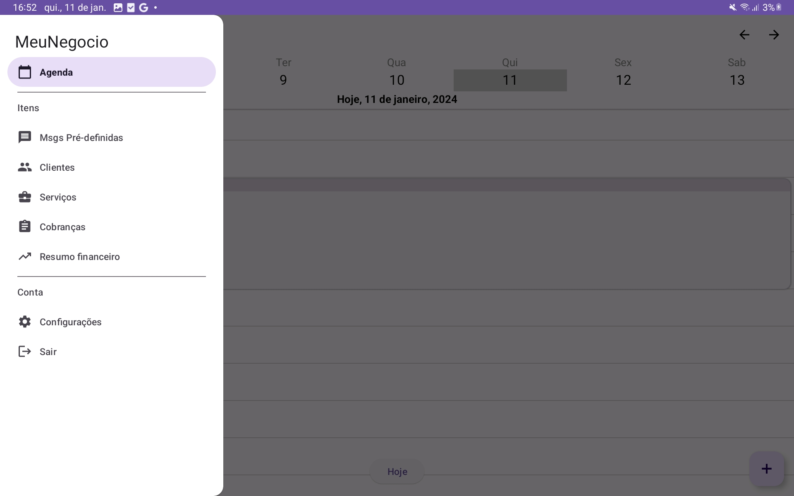

Sou estudante de Engenharia de Software com experiência em desenvolvimento mobile. Atualmente, trabalho como assistente de informações gerenciais enquanto busco me tornar um engenheiro de software back end. Em meu tempo livre, gosto de aprender sobre novas tecnologias para expandir minhas habilidades.
Habilidades
Java
HTML5
CSS3
JavaScript
Python
SQL
C#Csharp
VBA Virtual Basic for Applications
PBI Power BI
Projetos em destaque
Relatorio Power BI
App Meu negocio
App Lab2

Resumo do Projeto:
O projeto "Meu Negócio" foi concebido como um aplicativo de suporte para microempresas de serviços. Ele permite o registro e controle de agendamentos, clientes e horários, além de oferecer um resumo mensal financeiro. O aplicativo também possibilita o cadastro de serviços e clientes para vinculação a agendamentos e disponibiliza mensagens pré-definidas para comunicação ágil com os clientes, entre outros recursos. Para sua criação, foram utilizadas as tecnologias Firebase, Java e SQL. O principal desafio foi garantir uma experiência livre de problemas para os usuários no dia a dia, priorizando configurações flexíveis e a agilidade na inserção e coleta de dados. Embora ainda não tenha sido lançado publicamente, o aplicativo destaca-se pela sua usabilidade, permitindo o registro de fotos no atendimento, forma de pagamento e status de pagamento do cliente, com foco na eliminação de falhas e na inclusão de todos os registros relacionados à venda de serviços. Para quem não está familiarizado, o aplicativo é descrito como uma solução que gerencia os serviços de forma eficiente e sem complicações, eliminando preocupações como cobranças e atrasos.
Tecnologias:
Java
SQL
Resumo da imagem:
Sobre mim
Olá, eu sou o Gabriel, um entusiasta apaixonado pelo desenvolvimento de software. Minha paixão pelo processo de desenvolvimento, desde a concepção até a entrega, é impulsionada pela minha alegria em programar, pela satisfação de atender às necessidades dos clientes e pela emoção de corrigir bugs.
Atualmente, minha principal habilidade está no desenvolvimento nativo para Android. No entanto, estou em busca de me especializar ainda mais, expandindo meu conhecimento para incluir o desenvolvimento nativo para iOS e desktop.
Meu portfólio inclui projetos significativos que demonstram minha experiência. Entre eles, destaco um aplicativo Android desenvolvido para uso em laboratórios, outro voltado para microempresas, visando melhorar os registros de atendimento, e um relatório do Power BI no qual analisei dados de pesquisas NPS, identificando áreas de melhoria.
Meu objetivo é trabalhar como desenvolvedor backend, com foco em Java, C# e SQL, embora também tenha habilidades em linguagens frontend como HTML5, CSS3 e JavaScript.
Abordo os desafios de desenvolvimento como oportunidades de melhoria, sempre dedicando-me a encontrar soluções rápidas para garantir a satisfação dos clientes.
Meu hobby é aprender novas tecnologias e buscar constantemente melhorias nos meus projetos.
Um dos meus diferenciais é minha disposição para me envolver em diferentes tipos de projetos, não importando sua complexidade, sempre buscando maneiras de contribuir da melhor forma possível.
Em resumo, nunca estou satisfeito com meu conhecimento atual. Estou sempre em busca de aprimoramento, aprendendo e evoluindo constantemente.
 
